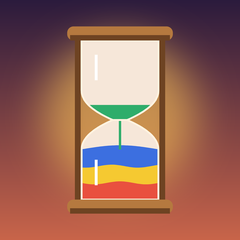

Hourglass Sort
Pour colored sand between hourglasses until every glass holds one color. Flip an hourglass and its sand drains through the neck in reverse order.
Help
How do I play?
Tap a glass, then tap another to pour. Sand only lands on its own color or in an empty glass. Tap ↻ under an hourglass to flip it. Flips are limited, and jars can't be flipped.
I'm stuck
Use Undo, Restart, a Hint, or add an extra empty hourglass. The game tells you when a board can no longer be solved.
I lost my progress
Progress is stored on your device only. Deleting the app deletes it.
How do I change ad and privacy choices?
In the app: Settings → Privacy & ad choices (shown where required by law). For tracking: iOS Settings → Privacy & Security → Tracking.
Contact
Email vjthevibecoder@gmail.com. We usually reply within 2 business days.